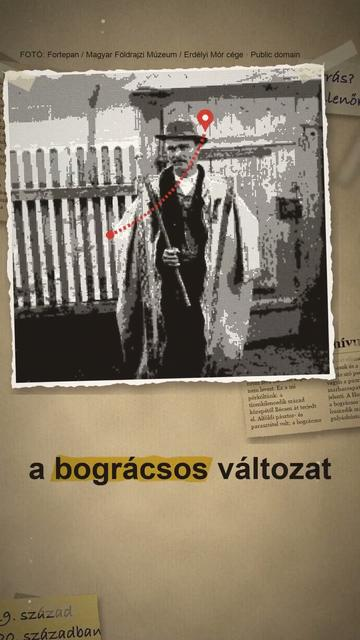

Megnézem a YouTube-onTényleg leves a gulyás?
Röviden: Tényleg leves a gulyás? Közép- és Nyugat-Európa nagy részén gulyás néven rövid levű húsételt kapsz, nem levest: a Magyar Néprajzi Lexikon szerint ez a mi pörköltünk, amely a 19.
Tényleg leves a gulyás? Közép- és Nyugat-Európa nagy részén gulyás néven rövid levű húsételt kapsz, nem levest: a Magyar Néprajzi Lexikon szerint ez a mi pörköltünk, amely a 19. század közepétől Bécs közvetítésével, magyar specialitásként terjedt el. Alföldi pásztor- és parasztétel volt; a bográcsos változat elismert mesterei a gulyások és a juhászok. A gulyás szó pedig a gulya, a pusztán szabadon tartott marhacsapat pásztorát is jelenti. A Hortobágy vidékén a bográcsos pörköltet a 20. században is gulyáshúsnak nevezték. Itthon viszont a gulyásleves lett a híres: a magyar gulyásleves hungarikum. A hungarikum nálunk tehát a gulyásleves, a külföldi gulyás inkább a pörköltünk.
Források
- Magyar Néprajzi Lexikon: pörkölt (Akadémiai Kiadó, 1977–1982; MEK)
- Magyar Néprajzi Lexikon: gulyás (MEK)
- Magyar Néprajzi Lexikon: gulya (MEK)
- A magyar nyelv értelmező szótára: gulyás, gulyásleves (Akadémiai Kiadó; OSZK)
- Magyar Értéktár: Hungarikumok Gyűjteménye (2026. 02. 24.)
5 forrás · Hogyan ellenőrzünk?
Hibát találtál? Írd meg nekünk, megnézzük.
Képek és kreditek
• gulyásleves bográcsban, Budapest (2012) – Top Budapest, CC BY 2.0 (https://creativecommons.org/licenses/by/2.0/) https://commons.wikimedia.org/?curid=35303425
• gulyásleves tányérban (2012) – Lennart Tange, CC BY 2.0 (https://creativecommons.org/licenses/by/2.0/) https://commons.wikimedia.org/?curid=52153394
• német és osztrák konzerv-Gulasch (Rinder-, Rindsgulasch, 2022) – Renardo la vulpo, CC0 (https://creativecommons.org/publicdomain/zero/1.0/) https://commons.wikimedia.org/?curid=125379810
• rövid levű marhagulyás, illusztráció – RitaE, CC0 (https://creativecommons.org/publicdomain/zero/1.0/) https://commons.wikimedia.org/?curid=91233117
• a bécsi Graben az 1890-es években (Photochrom, Library of Congress) – Photochrom Print Collection, Public domain (https://creativecommons.org/publicdomain/mark/1.0/) https://commons.wikimedia.org/?curid=33265008
• juhász a nyájjal a pusztán (1908, Erdélyi Mór cége) – Fortepan / Magyar Földrajzi Múzeum / Erdélyi Mór cége, Public domain (https://creativecommons.org/publicdomain/mark/1.0/) https://commons.wikimedia.org/?curid=51050146
• Csontváry Kosztka Tivadar: Vihar a Nagy Hortobágyon (1903), szürkemarhákkal és pásztorral – Tivadar Csontváry Kosztka, Public domain (https://creativecommons.org/publicdomain/mark/1.0/) https://commons.wikimedia.org/?curid=46876904
• szürkemarha-gulya a legelőn, háttérben a Kilenclyukú híd (Hortobágy, 1941) – Fortepan / ismeretlen adományozó, Public domain (https://creativecommons.org/publicdomain/mark/1.0/) https://commons.wikimedia.org/?curid=49394415
• juhász szűrben (1908, Erdélyi Mór cége) – Fortepan / Magyar Földrajzi Múzeum / Erdélyi Mór cége, Public domain (https://creativecommons.org/publicdomain/mark/1.0/) https://commons.wikimedia.org/?curid=51048043
• gulyásleves csipetkével, tányérban (2010) – Jgu, CC BY 3.0 (https://creativecommons.org/licenses/by/3.0/) https://commons.wikimedia.org/?curid=8964251